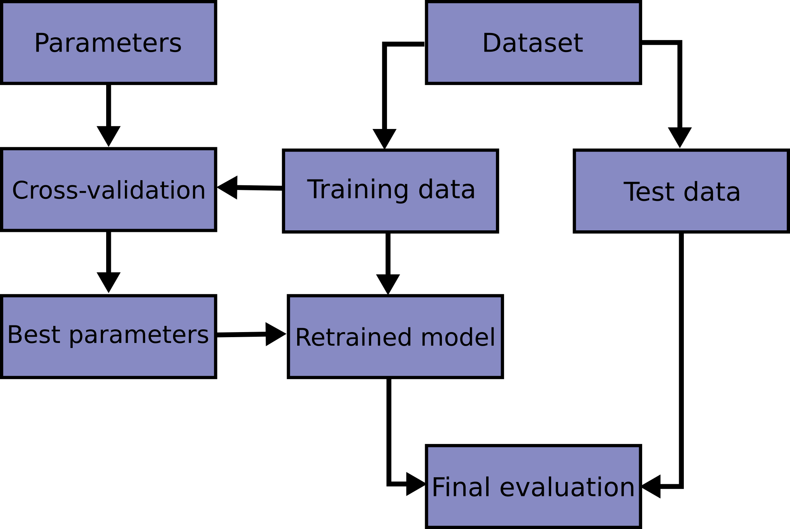

Cross-validation
\[ \def\train{\textrm{train}} \def\test{\textrm{test}} \def\meanm{\frac{1}{M} \sum_{m=1}^M} \]
Goals
- Introduce cross–validation as an estimator of population loss and some best practices:
- Costs and benefits of leave–one–out verus k–fold (bias / variance tradeoff)
- The importance of choosing the right independent unit
- The importance of repeating the full procedure
Reading
The primary reading for this section is @isl:2021:gareth Chapter 5.1 and @esl:2009:hastie chapter 7.10, for which these notes are just a small supplement.
Test sets
Recall that we want to control or at least estimate the generalization error, \(\hat{\mathscr{R}}(\hat{f}) - \mathscr{R}(\hat{f})\), since we have reason to believe that the other terms in the risk decomposition cannot hurt us.
However, the estimator \(\hat{\mathscr{R}}(\hat{f}) = \frac{1}{N} \sum_{n=1}^N\mathscr{L}(\hat{f}(\boldsymbol{x}_n), y_n)\) is not considered a reliable estimator of \(\mathscr{R}(\hat{f})\) because \(\hat{f}\) is not independent of \((\boldsymbol{x}_n, y_n)\). But suppose we have an actual new dataset, \(\mathcal{D}_\mathrm{new}= ((\boldsymbol{x}_1, y_1), \ldots (\boldsymbol{x}_M, y_M))\). Then we could just etsimate:
\[ \hat{\mathscr{R}}_\mathrm{new}(\hat{f}) \approx \frac{1}{M} \sum_{m=1}^M \mathscr{L}(\hat{f}(\boldsymbol{x}_m),y_m). \]
This is a consistent estimate of \(\mathscr{R}(\hat{f})\) since we did not use \(\mathcal{D}_\mathrm{new}\) to train \(\hat{f}\), and so \(\hat{f}\) is independent of \(\boldsymbol{x}_m, y_m\).
One might ask, if you had \(\mathcal{D}_\mathrm{new}\), why didn’t you just use it to train \(\hat{f}\)? Conversely, you might imagine taking the data you do have, and splitting it (randomly) into a “training set” \(\mathcal{D}_\train\) and a “test set” \(\mathcal{D}_\test\), using only \(\mathcal{D}_\train\) to compute \(\hat{f}\), and \(\mathcal{D}_\test\) to estimate \(\hat{\mathscr{R}}_\test(\hat{f})\) using the above formula. There are costs and benefits to doing this:
- You have less data to train \(\hat{f}\)
- You have a good estimate of \(\mathscr{R}(\hat{f})\)
Putting more data in \(\mathcal{D}_\train\) ameliorates the first cost, at the risk of making your estimate of \(\mathscr{R}(\hat{f})\) worse. There is no universally correct way to make this tradeoff.
Cross validation
A clever way to use nearly all the data to compute \(\hat{f}\) and still get a reasonable test set error is to repeat the above procedure many times, each time with a different \(\test\) set.
As an extreme, let \(\hat{f}_{-n}\) denote an estimate of \(\hat{f}\) with the \(n\)–th datapoint removed. Since you have removed only one datapoint, we might hope that \(\hat{f}_{-n} \approx \hat{f}\), so we have paid little estimation cost. Of course, the estimate
\[ \hat{\mathscr{R}}_\test(\hat{f}_{-n}) = \mathscr{R}(\hat{f}_{-n}(\boldsymbol{x}_n), y_n) \]
uses a single datapoint, and so is very variable, if nearly unbiased. However, we can do this for each datapoint and average the results to reduce the variance of the test error estimate. This is called the “leave–one–out CV estimator,” or LOO-CV:
\[ \hat{\mathscr{R}}_{LOO} := \frac{1}{N} \sum_{n=1}^N\mathscr{R}(\hat{f}_{-n}(\boldsymbol{x}_n), y_n). \]
Of course, you can do the same thing leaving two points out, or three, or so on, giving “leave–k–out CV” estimators. In the extreme where you leave a fraction \(N/K\) points out, you get “K–fold” CV estimators.
How many should you leave out? There seems to be to be a striking lack of useful theory. The rules of thumb are:
- By leaving out more datapoints you “bias” your estimate if your estimate of \(\hat{f}\) depends strongly on how many datapoints you have
- By leaving out more datapoints you reduce the “variance” of your estimate of \(\mathscr{R}(\hat{f})\) by making the test set larger.
So there appears to be a sort of meta–bias–variance tradeoff in the estimation of \(\mathscr{R}(\hat{f})\). However, it’s worth acknowledging that these rules of thumb are not universally true, and their theoretical support seems weak. Common practice is five or ten–fold cross–validation.
Using CV as selection
Typically we actually want to use CV not just to estimate \(\mathscr{R}(\hat{f})\) for a particular procedure, but to choose among a variety of procedures. For example, we might have a family of ridge regressions:
\[ \hat{\boldsymbol{\beta}}(\lambda) := \underset{\boldsymbol{\beta}}{\mathrm{argmin}}\, \frac{1}{N} \sum_{n=1}^N(\boldsymbol{\beta}^\intercal\boldsymbol{x}_n - y_n)^2 + \lambda \left\Vert\boldsymbol{\beta}\right\Vert_2^2, \]
and we would like to choose \(\lambda\) to minimize
\[ \lambda^* := \underset{\lambda}{\mathrm{argmin}}\, \mathscr{R}(\hat{\boldsymbol{\beta}}(\lambda)). \]
Of course we do not know \(\mathscr{R}(\hat{\boldsymbol{\beta}}(\lambda))\), but we can use our standard trick, and estimate
\[ \hat{\lambda}:= \underset{\lambda}{\mathrm{argmin}}\, \hat{\mathscr{R}}_{CV}(\hat{\boldsymbol{\beta}}(\lambda)). \]
Why not simply minimize \(\boldsymbol{\beta}, \lambda := \underset{\boldsymbol{\beta}, \lambda}{\mathrm{argmin}}\, \frac{1}{N} \sum_{n=1}^N(\boldsymbol{\beta}^\intercal\boldsymbol{x}_n - y_n)^2 + \lambda \left\Vert\boldsymbol{\beta}\right\Vert_2^2?\)
Of course, once we have an estimate \(\hat{\lambda}\), we can then take it and use the whole dataset as training with that particular \(\hat{\lambda}\).
Note that we have divided the problem into “hyperparameters” (\(\lambda\)) which are estimated with cross–validation, and “parameters” (\(\boldsymbol{\beta}\)) which have been estimated with the training set. What is a parameter and what is a hyperparameter? In one sense, “hyperparameters are just vibes” (“In Defense of Typing Monkeys,” @recht:2025:argmin); often our hyperparameters are extremely expressive. However, typical practice treats parameters as high–dimensional and capable of overfitting, and hyperparameters as a low to moderate–dimensional set of levers for controlling overfitting.
Putting it together
The scikit webpage has this picture:

Note that there are two different places where the map \(\mathcal{D}\mapsto \hat{f}\) happens (during and after hyperparameter selection), and two different uses of test sets (hyperparameter evaluation and “final” evaluation).